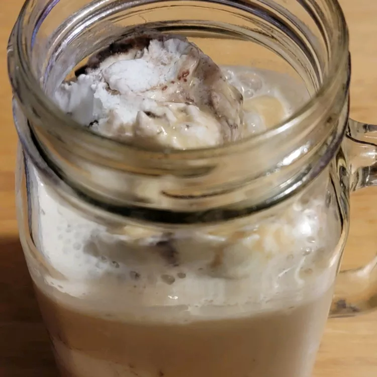

Southern Coffee Punch

Description
Snack time, any time's the right time for this delicious banana and orange juice drink.
This easy smoothie recipe is a 5-star favorite, and it's ready in less than 5 minutes.
Ingredients
- 2 cups boiling water
- 1 cup white sugar
- 1 (2 ounce) jar instant coffee granules (such as Nescafe®)
- 1 gallon 2% milk
- .5 gallon vanilla ice cream
- .5 gallon chocolate ice cream
Steps
- Stir boiling water, sugar, and instant coffee together in a bowl until dissolved; cool in refrigerator, 30 minutes to overnight.
- Pour coffee mixture into a punch bowl; add milk, vanilla ice cream, and chocolate ice cream. Stir until ice cream begins to melt.
Lets Learn some more recipes !!!